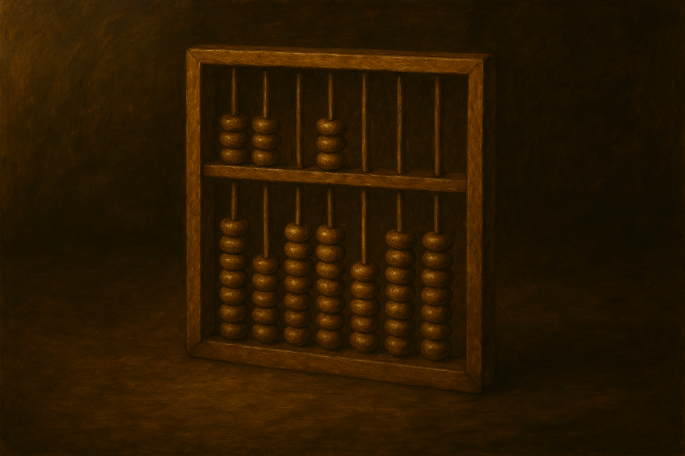
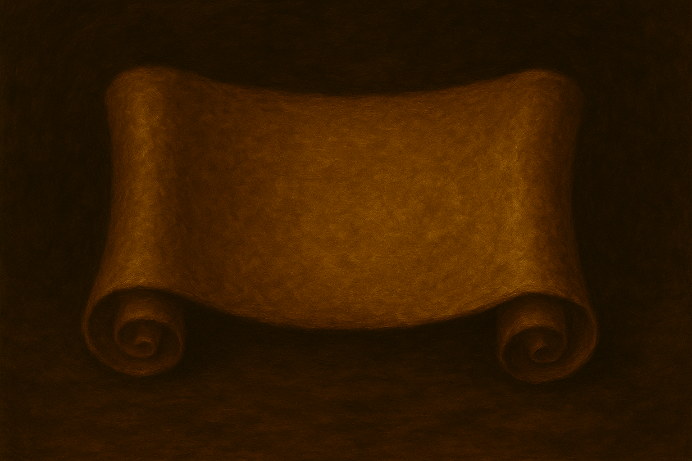

Awards
Qui troverete tutti i vincitori del Campionato Here you'll find all the Championship winners Noble Party Guilds War. Non saranno pochi, ma nemmeno troppi. . There won't be few, but not too many either. [Torna alla Home][Back to Home]
❮

Qui troverete tutti i vincitori del Campionato Here you'll find all the Championship winners Noble Party Guilds War. Non saranno pochi, ma nemmeno troppi. . There won't be few, but not too many either. [Torna alla Home][Back to Home]
Questi sono gli Awards (o Premi) che verranno consegnati a fine Campionato, quando la Campagna Ufficiale viene conclusa. Si basano sulla "Performance" che viene spiegata in seguito (ma a pari merito/performance, Premio identico per tutti). La performance viene calcolata basandoci sulla presenza di tutti i giocatori che hanno giocato, ma abbiamo applicato un ulteriore These are the Awards (or Prizes) that will be handed out at the end of the Championship, when the Official Campaign is concluded. They are based on the "Performance" explained below (but on equal merit/performance, everyone gets an identical Prize). Performance is calculated based on the presence of every player who played, but we also applied a further ACCESSO (condizione di accesso per l'Award). (access condition for the Award).
Si premia il
This rewards the CAMPIONE dei Leaders e dei Mercenari.
Coloro che hanno vinto (come partecipanti) il numero maggiore di sole partite Special (Champion).
Si attribuiscono il premio Oro, Argento e Bronzo.
Per i Leaders si guarda al maggiore numero di vittorie fra i Leaders.
Per i Mercenari si guarda al maggiore numero di vittorie fra i Mercenari.
I Leaders Principali contano come Leadrs.
of the Leaders and the Mercenaries. Those who won (as participants) the highest number of Special (Champion) matches only. Gold, Silver and Bronze prizes are awarded. For Leaders we look at the highest number of wins among Leaders. For Mercenaries we look at the highest number of wins among Mercenaries. Main Leaders count as Leaders.
ACCESSO: vinci almeno una partita come partecipante con modalità Champions (Fortnite inclusa).
win at least one match as a participant in Champions mode (Fortnite included).
| Leaders | Rnk | Mercenari |
|---|---|---|
| - | 1st | - |
| - | 2nd | - |
| - | 3rd | - |
Si premia il Leader e il Mercenario
This rewards the Leader and the Mercenary SANGUINARIO.
Coloro che hanno avuto la migliore performance sulle sole partite
Standard/Massacro (TS,MTS,FFA).
Si attribuiscono il premio Oro, Argento e Bronzo.
Per i Leaders si guarda la migliore performance fra i Leaders.
Per i Mercenari si guarda la migliore performance fra i Mercenari.
I Leaders Principali contano come Leadrs.
. Those with the best performance across Standard/Slayer matches only (TS, MTS, FFA). Gold, Silver and Bronze prizes are awarded. For Leaders we look at the best performance among Leaders. For Mercenaries we look at the best performance among Mercenaries. Main Leaders count as Leaders.
ACCESSO: gioca almeno 6 partite con modalità Standard.
play at least 6 matches in Standard mode.
| Leaders | Rnk | Mercenari |
|---|---|---|
| - | 1st | - |
| - | 2nd | - |
| - | 3rd | - |
Si premia il Leader e il Mercenario
This rewards the Leader and the Mercenary STRATEGICO.
Coloro che hanno avuto la migliore performance sulle sole partite Social (TS,MTS,FFA).
Si attribuiscono il premio Oro, Argento e Bronzo.
Per i Leaders si guarda la migliore performance fra i Leaders.
Per i Mercenari si guarda la migliore performance fra i Mercenari.
I Leaders Principali contano come Leadrs.
. Those with the best performance across Social matches only (TS, MTS, FFA). Gold, Silver and Bronze prizes are awarded. For Leaders we look at the best performance among Leaders. For Mercenaries we look at the best performance among Mercenaries. Main Leaders count as Leaders.
ACCESSO: gioca almeno 6 partite con modalità Social.
play at least 6 matches in Social mode.
| Leaders | Rnk | Mercenari |
|---|---|---|
| - | 1st | - |
| - | 2nd | - |
| - | 3rd | - |
Si premia il Leader e il Mercenario
This rewards the Leader and the Mercenary SCATENATO.
Coloro che hanno avuto la migliore performance sulle sole partite Sketch (TS,MTS,FFA).
Si attribuiscono il premio Oro, Argento e Bronzo.
Per i Leaders si guarda la migliore performance fra i Leaders.
Per i Mercenari si guarda la migliore performance fra i Mercenari.
I Leaders Principali contano come Leadrs.
. Those with the best performance across Sketch matches only (TS, MTS, FFA). Gold, Silver and Bronze prizes are awarded. For Leaders we look at the best performance among Leaders. For Mercenaries we look at the best performance among Mercenaries. Main Leaders count as Leaders.
ACCESSO: gioca almeno 4 partite con modalità Sketch.
play at least 4 matches in Sketch mode.
| Leaders | Rnk | Mercenari |
|---|---|---|
| - | 1st | - |
| - | 2nd | - |
| - | 3rd | - |
Si premia il Leader e il Mercenario
This rewards the Leader and the Mercenary ERRANTE.
Si attribuiscono il premio Oro, Argento e Bronzo.
Per i Leaders si guarda la migliore performance fra i Leaders su tutte le partite.
Per i Mercenari si guarda la migliore performance fra i Mercenari su tutte le partite.
I Leaders Principali contano come Leadrs.
. Gold, Silver and Bronze prizes are awarded. For Leaders we look at the best performance among Leaders across all matches. For Mercenaries we look at the best performance among Mercenaries across all matches. Main Leaders count as Leaders.
ACCESSO: gioca almeno 6 partite con modalità Standard, 6 partite con modalità Social,
e 4 partite con modalità Sketch. Inoltre Gioca almeno 4 partite (non Guerre) con ogni Gilda.
play at least 6 matches in Standard mode, 6 matches in Social mode, and 4 matches in Sketch mode. Also play at least 4 matches (not Wars) with every Guild.
| Leaders | Rnk | Mercenari |
|---|---|---|
| - | 1st | - |
| - | 2nd | - |
| - | 3rd | - |
Si premia il Leader e il Mercenario
This rewards the Leader and the Mercenary GUERRIERO.
Coloro che hanno avuto la migliore performance globale su tutte le partite.
Si attribuiscono il premio Oro, Argento e Bronzo.
Per i Leaders si guarda la migliore performance fra i Leaders.
Per i Mercenari si guarda la migliore performance fra i Mercenari.
I Leaders Principali contano come Leadrs.
. Those with the best overall performance across all matches. Gold, Silver and Bronze prizes are awarded. For Leaders we look at the best performance among Leaders. For Mercenaries we look at the best performance among Mercenaries. Main Leaders count as Leaders.
ACCESSO: gioca almeno 6 partite con modalità Standard, 6 partite con modalità Social,
e 4 partite con modalità Sketch.
play at least 6 matches in Standard mode, 6 matches in Social mode, and 4 matches in Sketch mode.
ESCLUSIONE: si assegna prima Award Viaggiatore, poi Award Guerre,
escludendo per Guerre chi ha già una medaglia uguale o superiore in Viaggiatore.
the Traveler Award is assigned first, then the Wars Award, excluding from Wars anyone who already has an equal or higher medal in Traveler.
| Leaders | Rnk | Mercenari |
|---|---|---|
| - | 1st | - |
| - | 2nd | - |
| - | 3rd | - |
Si premia la
This rewards the GILDA SOVRANASOVEREIGN GUILD.
la Gilda che ha avuto la migliore performance globale su tutte le partite.
Vengono inoltre premiati i primi 3 Leaders e i primi 3 Mercenari che hanno
avuto la migliore performance quando
hanno giocato con questa Gilda, aiutandola ad ottenere il miglior risultato.
Si attribuiscono il premio Oro, Argento e Bronzo per le prime 3 Gilde.
Il Leader Principale della Gilda conta per aiutare la Gilda a vincere,
ma non conta nel calcolo dei primi 3 Leaders (viene automaticamente premiato).
. the Guild with the best overall performance across all matches. The top 3 Leaders and top 3 Mercenaries with the best performance while playing with this Guild, helping it achieve the best result, are also rewarded. Gold, Silver and Bronze prizes are awarded to the top 3 Guilds. The Guild's Main Leader counts toward helping the Guild win, but does not count in the calculation of the top 3 Leaders (they are automatically rewarded).
ACCESSO Giocatore:Player ACCESS: gioca almeno 4 partite (non Guerre) con la Gilda.
play at least 4 matches (not Wars) with the Guild.
ACCESSO Gilda:Guild ACCESS:
La Gilda ha almeno il suo Leader Principale,
e almeno 1 Leader (può essere 1 Leader Principale di altre Gilde che conta come Leader)
e almeno 3 Mercenari che rispettino "ACCESSO Giocatore".
The Guild has at least its Main Leader, and at least 1 Leader (this can be a Main Leader of another Guild, counting as a Leader) and at least 3 Mercenaries meeting "Player ACCESS".
| GildaGuild | Rnk | Leader PrincipaleMain Leader | 1st Paladini1st Paladins | 2nd Paladini2nd Paladins | 3rd Paladini3rd Paladins |
|---|---|---|---|---|---|
| - | 1st | - | - | - | - |
| - | 2nd | - | - | - | - |
| - | 3rd | - | - | - | - |
Gilde che devono ancora accedere a questo Awards.Guilds that have yet to gain access to this Award.
| GildaGuild | ACCESSO | Info |
|---|---|---|
| Valchiria | NO | 2 Mercenari (Escluso: Glimpse) devono giocare almeno 4 Partite con Valchiria.2 Mercenaries (excluding Glimpse) must play at least 4 Matches with Valchiria. |
Ogni partita finisce con +1 per la Gilda o Armata vincente e +0 per quella perdente, questo è un punteggio di facciata. Al cuore di questo Campionato, non si premia la vittoria in termini tecnici (KDA, numero bandiere catturate ed altro), ma si premia quale vittoria viene raggiunta e come. Inoltre non ci limitiamo a premiare solo il primo classificato al fine di dare buoni propositi per ribaltare classifiche provvisorie. A tutte le Gilde in gioco viene applicato una serie di Fattori: la Valutazione. Tutti i fattori sono stati nascosti ai partecipanti, però mettiamo alla luce alcuni esempi per dare una idea. Every match ends with +1 for the winning Guild or Army and +0 for the losing one; this is a headline score. At the heart of this Championship, victory is not rewarded in technical terms (KDA, number of flags captured and so on), but rather which victory is achieved and how. We also don't limit ourselves to rewarding only the top-placed, so as to give good reason to overturn provisional standings. A series of Factors is applied to every Guild in play: the Evaluation. All the factors have been hidden from the participants, but we're bringing a few examples to light to give an idea.
| Fattore | DescrizioneDescription |
|---|---|
| Composizione GildaGuild Composition | Ogni Gilda è valutata sul rapporto Leader/Mercenari per ogni Guerra.Each Guild is evaluated on its Leader/Mercenary ratio for every War. |
| Tipo PartitaMatch Type | Ogni Gilda è valutata sulla base di quali partite ha giocato.Each Guild is evaluated on the basis of which matches it played. |
| Side Quest | Sono partite addizionali valutate allo stesso modo della campagna ufficiale. Servono per dare spazio a nuovi scontri e migliorare le sorti finali di Giocatori e Gilde. These are additional matches evaluated the same way as the official campaign. They exist to make room for new clashes and improve the final fortunes of Players and Guilds. |
| Ogni Gilda/Giocatori per seEach Guild/Player for themselves | Sebbene ci sono Guerre con Armate, ogni Gilda gioca per se stessa per il punteggio finale. Stessa cosa per i Giocatori.Although there are Wars with Armies, each Guild plays for itself for the final score. The same goes for the Players. |
| Classifica fine PartitaEnd-of-Match Standing | Generalmente, punteggi vengono attribuiti alle prime 4 Gilde.Generally, scores are awarded to the top 4 Guilds. |
| Punteggio FFAFFA Score | Classifica si basa sul 1° Classificato di ogni Gilda.The standing is based on each Guild's 1st-placed player. |
| Champions sugli AwardsChampions and the Awards | Per Awards Champions si conta il numero di vittorie. Ma questa modalità ha punti che impattano gli Awards: Guerre, Viaggiatore e Gilda.For the Champions Award the number of wins is counted. But this mode carries points that affect the Wars, Traveler and Guild Awards. |
| Spettatore durante Champions o SayansSpectator during Champions or Sayans | Durante queste modalità le Gilde/Armate mettono in panchina giocatori. Questi giocatori prendono meno punti dei giocatori in gioco.During these modes the Guilds/Armies bench players. Those players get fewer points than the players in play. |
| 📋 Note e Consigli📋 Notes and Tips |
|---|
| 👉 La possibilità di ricevere punti, la ha solo chi fa parte di una Gilda durante ogni Partita.👉 Only those who are part of a Guild during a given Match can receive points. |
| 👉 Sebbene le Gilde in Guerra devono avere fra di loro lo stesso numero di Leader e Mercenari, Caso particolare (valido) se il Leader Principale e la sua Gilda sono costretti ad avere un numero maggiore di Leaders rispetto alle altre Gilde per mancanza di Mercenari.👉 Although Guilds at War must have the same number of Leaders and Mercenaries as each other, there is a (valid) special case if the Main Leader and their Guild are forced to field more Leaders than the other Guilds for lack of Mercenaries. |
Quando una Gilda (o Armata) finisce una partita ottiene La Valutazione. Abbiamo detto che La Valutazione = una serie di Fattori. La Valutazione viene applicata ugualmente a tutti i giocatori di quella Gilda (o Armata) e quindi diventa Punti per i giocatori. When a Guild (or Army) finishes a match it obtains the Evaluation. We said the Evaluation = a series of Factors. The Evaluation is applied equally to all players of that Guild (or Army) and so becomes Points for the players.
Nel caso di giocatori in "Panchina" (Champions e Sayans), essi prendono un pò meno punti dei giocatori in gioco. Invece, i giocatori "Fuori dalla Partita" non vengono proprio considerati per i punteggi. For players on the "Bench" (Champions and Sayans), they get slightly fewer points than the players in play. Players "Out of the Match", instead, aren't counted for scoring at all.
| GiocatorePlayer | PuntiPoints |
|---|---|
| Panchina Bench | -1 |
| Fuori dalla Partita (Osservatore ma non in Panchina, oppure fuori dalla Lobby) Out of the Match (Observer but not on the Bench, or outside the Lobby) | Nessun Punteggio/Valutazione viene assegnata.No Score/Evaluation is assigned. |
Qui mostriamo l'influenza sui punti dalla composizione della Gilda in partita: Solo Mercenari, Solo Leaders, 1 Leader + Mercenari, 2 o più Leaders e Mercenari. Here we show how the Guild's composition in a match influences points: Mercenaries only, Leaders only, 1 Leader + Mercenaries, 2 or more Leaders and Mercenaries.
| Composizione Gilda in PartitaGuild Composition in a Match | Importanza |
|---|---|
| 1 Leader + Mercenari 1 Leader + Mercenaries | La più PrestigiosaThe most Prestigious |
| 2 o più Leades + Mercenari 2 or more Leaders + Mercenaries | Prestigiosa |
| Solo Mercenari Mercenaries only | Poco PrestigiosaNot very Prestigious |
| Solo Leaders Leaders only | La Meno PrestigiosaThe least Prestigious |
La Modalità Champions deve presentare in partita solo Mercenari o solo Leaders e, in entrambi casi, allo stesso modo, risulta nel prestigio. Champions Mode must field either Mercenaries only or Leaders only in a match and, in both cases equally, it counts toward prestige.
| Composizione Gilda in Partita (il Mio Campione / Champions)Guild Composition in a Match (My Champion / Champions) | Importanza |
|---|---|
| Solo Mercenari o Solo Leaders Mercenaries only or Leaders only | PrestigiosissimaExtremely Prestigious |
Se una Gilda presenta più Leaders rispetto ad una altra / alle altre: questo è acconsentito ma risulta in uno svantaggio di punteggio. If a Guild fields more Leaders than another / than the others: this is allowed but results in a scoring disadvantage.
| Composizione Gilda e la sua PanchinaGuild Composition and its Bench | Punteggio |
|---|---|
| Essa ha più Leaders delle altre Gilde It has more Leaders than the other Guilds | -1 |
Qui mostriamo i punti assegnati quando viene scelta un partita per tutte le possibili combinazioni:
(TS/FFA/MTS, Social/Standard/Sketch/Champions, Sayans).
Questi punti sono pure dipendenti dalla Composizione della Gilda.
Here we show the points awarded when a match is chosen, for every possible combination: (TS/FFA/MTS, Social/Standard/Sketch/Champions, Sayans). These points also depend on the Guild's Composition.
Ancora da mostrare qui sul sito per non influenzare troppo le scelte delle partite basandosi solo esclusivamente sui punteggi.
Still to be shown here on the site, so as not to influence match choices too much based purely on the scores.
La difficoltà di applicare questo parametro sta nell'utilizzare armi specifiche. The difficulty of applying this parameter lies in using specific weapons.
| Arsenale Gilda (Standard,Champions)Guild Arsenal (Standard, Champions) | PuntiPoints |
|---|---|
| Applicato Applied | 0,5 |
| Non Applicato Not Applied | 0 |
Qui mostriamo i punti addizionali quando le Gilde si classificano a fine partita.
I punti dipendono dal tipo di partita, dal posizionamento in classifica e dal numero delle Gilde in gioco.
Here we show the additional points when Guilds place at the end of a match. The points depend on the match type, the placement in the standing and the number of Guilds in play.
ATTENZIONE: il valore "AZZERA" significa che il punteggio viene completamente azzerato per quella partita.
: the value "RESET" means the score is zeroed out entirely for that match.
NOTA: in caso di pareggio, viene sempre assegnato il posto classificato più alto di tutte le Gilde o Armate che hanno pareggiato.
: in case of a draw, the highest placement among all the tied Guilds or Armies is always assigned.
Per una partita TS, in caso di 4-6-8 Gilde in Gioco, esse sono raggruppate in 2 Armate definendo sempre un primo e secondo classificato. For a TS match, with 4-6-8 Guilds in play, they are grouped into 2 Armies, always defining a first and second place.
| TS (Standard,Social,Sketch)TS (Standard, Social, Sketch) | 2 Gilde | 4 Gilde | 6 Gilde | 8 Gilde |
|---|---|---|---|---|
| Prima Gilda Classificata First-placed Guild | 2 | 3 | 3 | 4 |
| Seconda Gilda Classificata Second-placed Guild | 1 | 2 | 2 | 3 |
| MTS (Standard,Social,Sketch)MTS (Standard, Social, Sketch) | 4 Gilde | 6 Gilde | 8 Gilde |
|---|---|---|---|
| Prima Gilda Classificata First-placed Guild | 3 | 3 | 4 |
| Seconda Gilda Classificata Second-placed Guild | 2 | 2 | 3 |
| Terza Gilda Classificata Third-placed Guild | 1 | 1 | 2 |
| Quarta Gilda Classificata Fourth-placed Guild | 0 | 0 | 1 |
| Dal Quinto Classificato in poi From Fifth place onward | 0 | 0 | 0 |
| FFA (Standard,Social)FFA (Standard, Social) | 2 Gilde | 4 Gilde | 6 Gilde | 8 Gilde |
|---|---|---|---|---|
| Prima Gilda Classificata First-placed Guild | 2 | 3 | 3 | 4 |
| Seconda Gilda Classificata Second-placed Guild | 1 | 2 | 2 | 3 |
| Terza Gilda Classificata Third-placed Guild | - | 1 | 1 | 2 |
| Quarta Gilda Classificata Fourth-placed Guild | - | 0 | 0 | 1 |
| Dal Quinto Classificato in poi From Fifth place onward | - | - | 0 | 0 |
Un Azzardo selezionare una partita FFA Sketch dove trova una sola squadra come vincitrice. It's a gamble to pick an FFA Sketch match, where only one team comes out the winner.
| FFA (Sketch)FFA (Sketch) | 2 Gilde | 4 Gilde | 6 Gilde | 8 Gilde |
|---|---|---|---|---|
| Prima Gilda Classificata First-placed Guild | 2 | 3 | 3 | 4 |
| Seconda Gilda Classificata Second-placed Guild | AZZERA | AZZERA | AZZERA | AZZERA |
| Terza Gilda Classificata Third-placed Guild | - | AZZERA | AZZERA | AZZERA |
| Quarta Gilda Classificata Fourth-placed Guild | - | AZZERA | AZZERA | AZZERA |
| Dal Quinto Classificato in poi From Fifth place onward | - | - | AZZERA | AZZERA |
Un Azzardo selezionare una partita Champions quando 2 Gilde dove trova una sola squadra come vincitrice. It's a gamble to pick a Champions match with 2 Guilds, where only one team comes out the winner.
| Champions (anche Fortnite)Champions (Fortnite too) | 2 Gilde | 4 Gilde | 6 Gilde | 8 Gilde |
|---|---|---|---|---|
| Prima Gilda Classificata First-placed Guild | 2 | 3 | 3 | 4 |
| Seconda Gilda Classificata Second-placed Guild | AZZERA | 2 | 2 | 3 |
| Terza Gilda Classificata Third-placed Guild | - | 1 | 1 | 2 |
| Quarta Gilda Classificata Fourth-placed Guild | - | 0 | 0 | 1 |
| Dal Quinto Classificato in poi From Fifth place onward | - | - | 0 | 0 |
| 📋 Note e Consigli📋 Notes and Tips |
|---|
| 👉 Per le TS con Gilde o Armate, 1st Classificato è il vincente, e 2nd Classificato è il perdente.👉 For TS with Guilds or Armies, 1st place is the winner and 2nd place is the loser. |
| 👉 Per le FFA, la classifica delle Gilde in gioco viene determinata dal miglior piazzamento di uno dei suoi giocatori. Guardiamo a quale Armata appartiene la 1st Gilda per esporre il punteggio e fine partita.👉 For FFA, the standing of the Guilds in play is determined by the best placement of one of their players. We look at which Army the 1st Guild belongs to in order to post the score at the end of the match. |
| 👉 Ogni combinazione di categoria di partita (Standard,Social,Sketch,Champions) con tipo (MTS,TS,FFA) e opzione (Sayans) ha un fattore unico.👉 Every combination of match category (Standard, Social, Sketch, Champions) with type (MTS, TS, FFA) and option (Sayans) has a unique factor. |
| 👉 "Sayans MTS" con sole 2 Gilde in gioco, conta come "Sayans TS".👉 "Sayans MTS" with only 2 Guilds in play counts as "Sayans TS". |
A differenza della The Great LAN (2024), qui abbiamo lasciato piena libertà ai giocatori di: giocare con qualsiasi squadra/gilda, comporre la gilda con un numero più o meno elevato di giocatori, scegliere il numero di guerre da fare (side quests sono opzionali). Questo aumenta i gradi di libertà che influenzano il punteggio (Punti) cumulativo di ogni gilda e ogni giocatore. Abbiamo deciso di usare una formula che renda più equo possibile il fatto che alcuni giocatori giocheranno meno partite di altri, accumulando meno punti, che alcune gilde potrebbero essere sempre composte da meno giocatori di altre e così via. Ad ogni Punteggio di un giocatore, abbiamo usato Bayesian Weighted Average per determinare la sua performance. Unlike The Great LAN (2024), here we left players complete freedom to: play with any team/guild, build the guild with more or fewer players, choose the number of wars to play (side quests are optional). This increases the degrees of freedom affecting each guild's and each player's cumulative score (Points). We decided to use a formula that makes it as fair as possible that some players will play fewer matches than others, accumulating fewer points, that some guilds may always be made up of fewer players than others, and so on. For each of a player's Scores, we used a Bayesian Weighted Average to determine their performance.
\( \mathrm{BWA}^{(c,p)}_{i} = \dfrac{k^{(c,p)} \cdot L^{(c,p)} + X^{(c,p)}_{i}}{k^{(c,p)} + Y^{(c,p)}_{i}} \)
che rappresenta la formula applicata ad ogni Giocatore rispetto a Classe e Partita. Dove il parametro Lega:which represents the formula applied to each Player with respect to Class and Match. Where the League parameter:
\( L^{(c,p)} = \dfrac{\sum_i X^{(c,p)}_{i}}{\sum_i Y^{(c,p)}_{i}} \)
rappresenta la media globale (tutti i giocatori considerati) e il parametrorepresents the global average (all players considered) and the parameter
\( k^{(c,p)} = \mathrm{mediana}(Y^{(c,p)}_{i}) \)\( k^{(c,p)} = \mathrm{median}(Y^{(c,p)}_{i}) \)
rappresenta un coefficiente di regolarizzazione, cioè quanto peso dare alla media globale, deciso come mediana.
represents a regularization coefficient, i.e. how much weight to give the global average, set as the median.
Per quanto riguarda l'apice delle variabili:As for the superscript of the variables:
\( (c;p) = (\mathrm{Classe}\,;\,\mathrm{Partita}) \)\( (c;p) = (\mathrm{Class}\,;\,\mathrm{Match}) \)
ci sono 2 Classi: Leader e Mercenario, e 5 (tipi di) Partite: Overall-Tutte, Social, Sketch, Standard, Special. Per quanto riguarda il pedice delle variabili, indica il giocatore preso in considerazione:there are 2 Classes: Leader and Mercenary, and 5 (types of) Matches: Overall-All, Social, Sketch, Standard, Special. As for the subscript of the variables, it indicates the player under consideration:
\( i = \mathrm{Giocatore }\,i\)\( i = \mathrm{Player }\,i\)
Infine:
\( X = \mathrm{Punti}\,;\,Y = \mathrm{Osservazione}\)\( X = \mathrm{Points}\,;\,Y = \mathrm{Observation}\)
che sono il punteggio (Punti) cumulativo del giocatore e il numero di volte che ha giocato (ovviamente valori che cambiano in base all'apice e pedice).which are the player's cumulative score (Points) and the number of times they played (values that obviously change according to the superscript and subscript).
Questi BWA sono stati usati per determinare gli Awards. Abbiamo considerato per la formula BWA, e.g. per la mediana, tutti i giocatori con almeno 1 Osservazione quindi 1 partita.These BWAs were used to determine the Awards. For the BWA formula, e.g. for the median, we considered all players with at least 1 Observation, i.e. 1 match.
Per l'Award delle Gilda, abbiamo fatto uno step di calcolo addizionale. Per ogni Gilda abbiamo considerato le Partite come Overall-Tutte giocate da ogni giocatore con la Gilda. E qui abbiamo preso gli BWA Leaders e Mercenari di ciascuna Gilda: con hanno rispettato l'ACCESSO per l'Award Gilda. Poi abbiamo preso la Media di tutti questi BWA considerandolo il BWA della Gilda.For the Guild Award, we did an additional calculation step. For each Guild we considered the Matches as Overall-All played by each player with the Guild. And here we took the Leaders' and Mercenaries' BWAs for each Guild: those who met ACCESS for the Guild Award. Then we took the Average of all these BWAs, treating it as the Guild's BWA.
| 📋 Note su BWA📋 Notes on BWA |
|---|
| 👉 Parametro k tira i giocatori con poche partite verso L; k evita picchi ingiusti di giocatori che giocano poco👉 Parameter k pulls players with few matches toward L; k avoids unfair spikes from players who play little |
| 👉 Giocatore con poche partite e con X/Y media bassa, alzato verso L👉 A player with few matches and a low X/Y average is raised toward L |
| 👉 Giocatore con molte partite e con X/Y media bassa, viene poco alterato e rimane basso👉 A player with many matches and a low X/Y average is barely altered and stays low |
| 👉 BWA premia chi ha poche partite ma con una alta media X/Y.👉 BWA rewards those with few matches but a high X/Y average. |
| 👉 BWA non premia chi ha media X/Y bassa, ma smussa l’impatto dei pochi dati (poche partite).👉 BWA does not reward those with a low X/Y average, but it smooths the impact of sparse data (few matches). |
| 👉 Questo metodo considera il fatto che ad ogni guerra partecipano un numero di giocatori differenti.👉 This method accounts for the fact that a different number of players take part in each war. |
| 👉 I parametri L e k cambiano ad ogni partita conclusa.👉 The parameters L and k change with every concluded match. |
| 👉 Sebbene una partita possa risultare con un punteggio azzerato per un giocatore, la formula BWA non permette performance "zero" (0.0).👉 Although a match may result in a zeroed score for a player, the BWA formula does not allow a "zero" performance (0.0). |
| 👉 Per l'Award della Gilda, la media normalizza il fatto che tutte le partite hanno un numero differente di giocatori in gioco.👉 For the Guild Award, the average normalizes the fact that all matches have a different number of players in play. |

Ispeziona i Punteggi del CampionatoInspect the Championship Scores on Scores.

I Racconti di chi ha vissuto questo Campionato suThe Tales of those who lived this Championship on Chronicles.

Prima di giocare ricordati di leggere ilBefore playing remember to read the Regolamento.

GildaGuild Ade, GildaGuild Aquila, GildaGuild Bastione, GildaGuild Cobra, GildaGuild Pericolo, GildaGuild Sciabola, GildaGuild Valchiria, GildaGuild Valore.